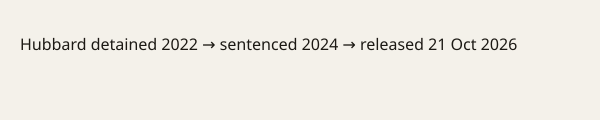

Russia · United States · 21 October 2026
Russia released 74-year-old American Stephen Hubbard in St. Petersburg during Steve Witkoff’s meeting with Vladimir Putin; Witkoff called the Russian president a humanitarian.

What is agreed across desks
On 21 October 2026 Russian authorities released Stephen James Hubbard, a 74-year-old retired American teacher, in St. Petersburg. Hubbard had been detained in eastern Ukraine in 2022 and convicted in 2024 of serving as a mercenary for Ukraine; he was sentenced to nearly seven years. The U.S. government had designated him wrongfully detained. President Trump said he had asked Putin directly in a recent call and that no prisoner swap was required. Hubbard was taken to Pulkovo Airport and later arrived at Lackland Air Force Base in Texas. During the same visit U.S. envoy Steve Witkoff met Putin and, on camera, said “you are a humanitarian also, sir.” Russian officials stated that technical-level discussions involving the United States, Russia and Ukraine could resume.
What is only a quote
Witkoff’s characterization of Putin as a humanitarian is a statement by the American envoy. Trump’s assertion that the release would not have occurred if new sanctions had taken effect is a claim about causation. Russian descriptions of Hubbard as a mercenary are the content of the conviction the U.S. rejects. None of these sentences is an independent finding about Hubbard’s activities in Ukraine or about the strategic value of the release.
Mechanism and history a reader needs
Since Russia’s full-scale invasion of Ukraine in 2022, Moscow has detained a number of foreign nationals and used their release as a diplomatic instrument. Some releases have been paired with swaps of Russians held in the West; others have been presented as unilateral gestures. The U.S. State Department maintains a list of wrongfully detained Americans; placement on that list reflects a government determination, not a court finding in the detaining country. Hubbard’s case fits the pattern of an elderly civilian held on charges the United States has called fabricated. The simultaneous timing with Witkoff’s visit and the public thanks given to Putin are consistent with previous Russian practice of pairing a release with a high-level meeting.
What the story is not
It is not evidence that the war in Ukraine is ending. It is not a medical report on Hubbard’s condition beyond the statement that he was in poor health. It is not a verification of the underlying mercenary charges or of their absence.

Source articles and scores
| Outlet | Headline | T | N | C |
|---|---|---|---|---|
| Reuters | Russia frees retired US schoolteacher in goodwill gesture as Putin meets Witkoff | 97 | 0 | 100 |
| BBC | US citizen Stephen Hubbard freed by Russia as Trump envoy meets Putin | 95 | 0 | 98 |
| AP / CBS | American Stephen Hubbard released by Russia, Trump confirms | 96 | 0 | 100 |